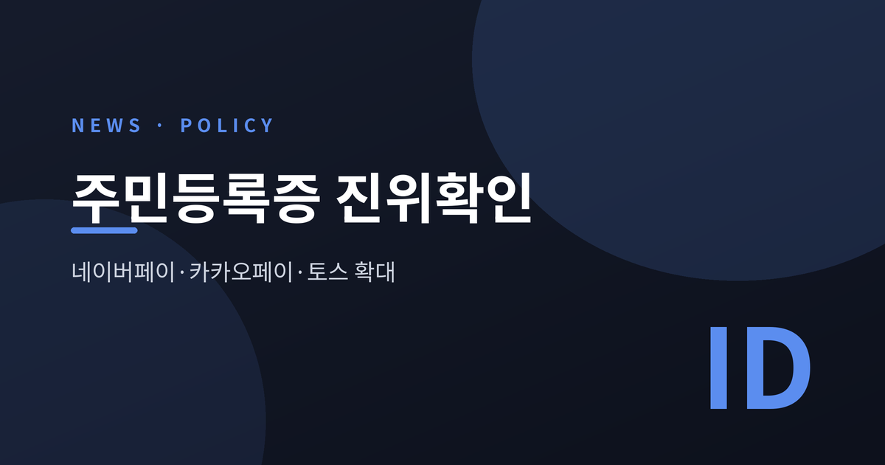
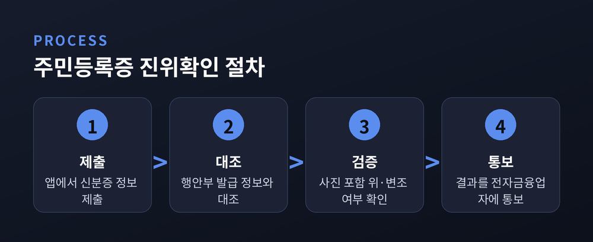
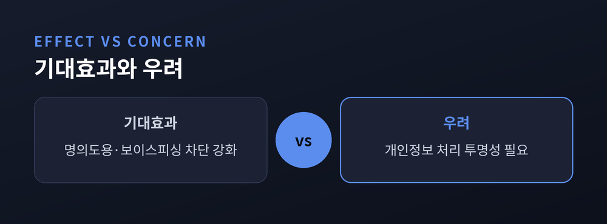
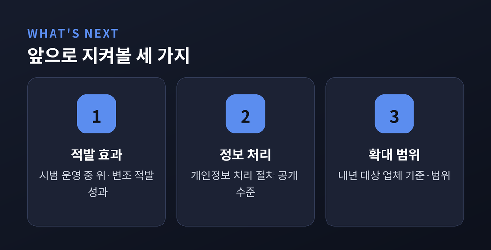

[정치/사회] 네이버페이·카카오페이·토스, 주민등록증 진위확인 도입…무엇이 달라지나

간편결제나 간편송금을 쓸 때, 이제는 정부가 신분증 진위를 직접 대조해 줍니다. 행정안전부가 네이버페이·카카오페이·토스와 손잡고 주민등록증 진위확인 서비스를 확대하기로 했습니다. 위·변조 신분증을 이용한 명의도용과 보이스피싱을 막기 위한 조치로 알려졌습니다.
- 행안부·금융감독원·금융결제원과 네이버페이·카카오페이·토스가 업무협약을 체결했습니다.
- 사진 정보까지 대조해 신분증의 위·변조 여부를 확인하는 방식입니다.
- 올해는 3개사 시범 운영, 내년부터 다른 전자금융업체로 확대될 전망입니다.
무슨 일인가 — 간편결제도 신분증 진위 확인
행정안전부는 지난 9일 서울 서초구 토스 사옥에서 네이버페이, 카카오페이, 비바리퍼블리카(토스), 금융감독원, 금융결제원과 「전자금융업자의 주민등록증 진위 확인 확대를 위한 업무협약」을 체결했습니다. 여러 매체가 같은 날짜, 같은 협약 내용을 일제히 보도했습니다.
그동안 전자금융업자들은 고객 확인 과정에서 한계가 뚜렷했습니다. 성명과 주민등록번호, 발급일자의 유효성 정도만 제한적으로 확인할 수 있었을 뿐, 사진을 포함한 실물 위·변조 여부는 실시간으로 가려내기 어려웠습니다. 신분증 사본만 있으면 본인확인 절차를 통과하기 쉬웠다는 뜻이기도 합니다.
이번 협약으로 상황이 달라집니다. 고객이 앱으로 제출한 주민등록증 정보를 행정안전부의 발급 정보와 대조해, 사진까지 포함한 진위 여부를 가려낼 수 있게 됐습니다. 역할도 나뉩니다. 행안부는 시스템 제공과 정책 지원을, 금융감독원은 보안 점검과 감독을, 금융결제원은 중계기관으로서 시스템 연계를 각각 맡습니다.

왜 중요한가 — 기대효과와 우려
간편결제·간편송금 이용이 늘면서 위·변조 신분증을 악용한 명의도용, 보이스피싱, 범죄수익 은닉 시도도 함께 고도화되고 있다는 지적이 배경으로 꼽힙니다. 실물 대조가 빠지면 신분증 사본 위조만으로 계좌를 개설하거나 돈을 옮기는 일이 가능했던 셈입니다. 이번 조치는 그 틈을 메우려는 시도로 볼 수 있습니다.
기대되는 효과는 분명합니다. 사진까지 실시간으로 맞춰 보는 만큼, 위조 신분증을 이용한 범죄를 걸러내는 문턱이 한층 높아질 것으로 보입니다. 비대면 거래가 늘어난 시대에 신원확인의 신뢰도를 끌어올리는 조치라는 평가가 나옵니다.
다만 균형 있게 볼 지점도 있습니다. 신분증 사진 같은 민감한 개인정보가 정부 시스템과 민간 전자금융업자 사이를 오가는 구조인 만큼, 정보가 어떤 범위에서 처리되고 언제 파기되는지에 대한 투명한 설명이 뒤따라야 한다는 목소리가 나올 수 있습니다. 최근 주민등록증 모바일 확인서비스가 AI 위조 사례 증가로 존폐를 검토받고 있다는 별개의 보도도 있었던 만큼, 디지털 신원확인 전반의 보안을 어떻게 촘촘히 설계할지는 계속 지켜볼 대목입니다.

전망 — 시범 운영에서 확대까지
서비스는 일단 시범 단계로 시작합니다. 올해는 금융결제원의 금융 연계망을 활용해 네이버페이, 카카오페이, 토스 3사만 대상으로 운영됩니다. 행정안전부는 금융감독원과 함께 운영 성과와 안정성을 검증한 뒤, 내년부터 기준 자격을 갖춘 전자금융업체로 대상을 넓힐 방침이라고 알려졌습니다.
바꿔 말하면, 지금 단계에서 단정할 수 있는 것은 많지 않습니다. 확대 속도와 범위는 시범 운영 결과에 달려 있습니다. 앞으로 지켜볼 지점은 세 가지 정도로 정리할 수 있습니다. 하나는 시범 운영에서 실제로 위·변조 적발 효과가 얼마나 나타나는지입니다. 다른 하나는 개인정보 처리 절차가 얼마나 투명하게 공개되는지입니다. 마지막은 내년 확대 대상이 어떤 기준으로, 어느 범위까지 넓어지는지입니다.

정리하면, 이번 조치는 간편결제·송금의 신원확인 공백을 메우려는 행정 조치입니다. 위조 신분증을 이용한 범죄를 줄이려는 목적은 분명하지만, 그 과정에서 다뤄지는 정보가 민감한 만큼 안전장치도 함께 논의돼야 할 것입니다. 시범 운영이라는 첫 단추가 어떻게 검증되느냐에 따라, 내년 이후의 모습도 달라질 것으로 보입니다.
"편리함과 안전 사이, 이번에는 신분증 한 장이 시험대에 올랐습니다." 시범 운영의 결과가 그 답을 조금씩 보여줄 것입니다.